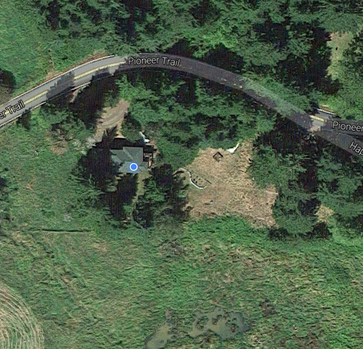

<html>
  <head>
    <style>
      body {
        margin: 0px;
        padding: 0px;
      }
      .wrapper{
        width: 500px;
        height: 500px;
        border: 3px solid black;
      }

      #myCanvas {
        position:fixed;
        background: transparent;
        z-index: 1000;
        /*background-image: url('map_image.png');*/
      }

      img {
        position:fixed;
      } 

    </style>

    <link rel="stylesheet" href="https://npmcdn.com/leaflet@1.0.0-rc.3/dist/leaflet.css" />
  </head>
  <body>
    <div id="wrapper">
      <canvas id="myCanvas" width="500px" height="500px"></canvas>
      <!-- </img> -->
      
    </div>
    <div id="map" style="width: 500px; height: 500px"></div>
    <script src="https://npmcdn.com/leaflet@1.0.0-rc.3/dist/leaflet.js"></script>
    <script>
      (function(){
      var map = L.map('map', { zoomControl:false });

      var osmUrl='http://{s}.tile.openstreetmap.org/{z}/{x}/{y}.png';
      var osmAttrib='Map data © <a href="http://openstreetmap.org">OpenStreetMap</a> contributors';
      var osm = new L.TileLayer(osmUrl, {minZoom: 8, maxZoom: 16, attribution: osmAttrib});   

      // start the map
      map.setView([44.65, -123.917], 15);
      map.addLayer(osm);       
    })();


      function getMousePos(canvas, evt) {
        var rect = canvas.getBoundingClientRect();
        return {
          x: evt.clientX,
          y: evt.clientY
        };
      }

      function addPoint(pos) {
        context.fillStyle = 'red';
        console.log("Adding point at ", pos)
        context.fillRect(pos.x,pos.y,3,3);
      }


      function drawblurrycircle2(pos){
          
          r_outer = 50;
          r_inner = 1; 
          startColor = "rgba(200,200,200,0.0)";
          endColor = "rgba(200,200,200,1.0)";
          var gradient = context.createRadialGradient(pos.x,pos.y,r_outer,pos.x,pos.y,r_inner);
          gradient.addColorStop(0,startColor);
          gradient.addColorStop(0.4,"rgba(200,200,200,0.1)");
          gradient.addColorStop(1,endColor);
          context.fillStyle = gradient;
          context.fillRect(pos.x-r_outer,pos.y-r_outer,2*r_outer,2*r_outer);
      }


      var canvas = document.getElementById('myCanvas');
      var context = canvas.getContext('2d');
      context.fillStyle = "rgb(200,200,200)";
      context.fillRect(0,0,500,500);
      context.globalCompositeOperation = 'destination-out';


      canvas.addEventListener('mousemove', function(evt) {
        var mousePos = getMousePos(canvas, evt);
        var message = 'Mouse position: ' + mousePos.x + ',' + mousePos.y;
        drawblurrycircle2(mousePos);
        //addPoint(mousePos);
      }, false);


    </script>

  </body>
</html>
      